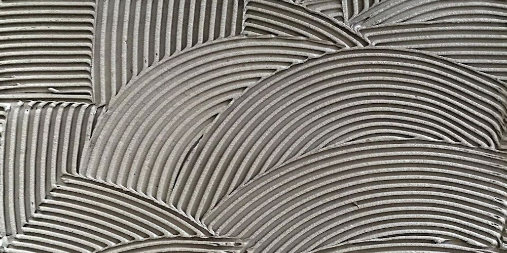

„energy conscious starchitecture”
stArchitecten werd in 2012 opgericht door Ir. Architect Lieselotte Steurbaut.
stArchitecten bestaat uit 3 voltijdse (Ir.) Architecten en 2 freelance medewerkers.
Zaakvoeder Ir. Architect Lieselotte Steurbaut studeerde Burgerlijk Ingenieur Architect te Gent, en behaalde ook een Master in de ‘Energietechniek in Gebouwen’. Zij deed meerdere jaren ervaring op als projectleider in architectenbureaus in Ternat en Oudenaarde, en raakte gepassioneerd door ‘duurzaam en energiezuinig bouwen’. Zij volgde elke mogelijke opleiding omtrent passief bouwen en energieprestaties van gebouwen.
Als professioneel lid van het PassiefHuisPlatform blijven wij steeds op de hoogte van de laatste ontwikkelingen op vlak van duurzaam en energiezuinig bouwen. Wij dragen eveneens het label ‘Energiebewust Architect’ en zijn EPB-verslaggever voor onze eigen projecten.
Werking
stArchitecten staat garant voor een professionele en persoonlijke aanpak. Als zaakvoerders, geboren in een nest van zelfstandigen, doen we er alles aan om een uitstekende service te bieden. Een bouwproject is een groot avontuur waar wij als architecten graag deel van uitmaken. Onze bijdrage heeft tot doel dat u een functioneel, energetisch en esthetisch kwalitatief gebouw bekomt, evenals dat u doorheen het volledig projectverloop een aangename tijd beleeft. We streven een persoonlijke aanpak na, waarin u begeleid wordt bij het nemen van beslissingen en het maken van keuzes. Als architecten streven wij naar architecturale vernieuwing en ruimtelijke kwaliteit in een hedendaagse en sobere vormgeving. Als ingenieurs zijn we gedreven in het strikt opvolgen van budgetten en planningen, en hebben we een grote aandacht voor detaillering en techniek. De werffase is de meest uitdagende fase, maar daardoor ook meteen onze favoriete fase van een project. Een plan of schets die geleidelijk tot leven komt is uiterst fascinerend.
Overtuigd door passief bouwen uit persoonlijke ervaring: De zaakvoerders bouwden in 2010 hun eigen woning – een passief huis met nul-energie-certificaat (E-peil 0). U kan op deze website alle publicaties hieromtrent bekijken, en de conceptnota doorlezen. Het project had niet alleen heel wat success in de media, werd geselecteerd voor de Belgische Prijs voor de Energie 2011 en won de Belgische Schrijnwerk Award 2011. Het is ook qua leefkwaliteit een topper. Geen onkosten voor energie en een constant comfortabel binnenklimaat. Het huis werd in slechts 6 maand gebouwd. Het totale project, van ontwerp tot verhuis, duurde net geen jaar.
- 